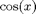
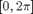
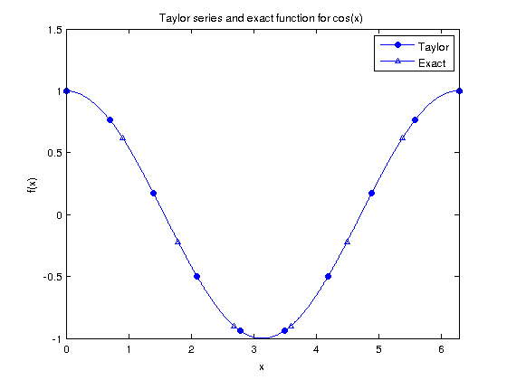
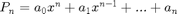

Math 340 - Lab #2
Contents
Taylor Series
Write a function that will calculate Taylor series of

on interval
, with error less than some given tolearane. Test your code with error = . Plot the error vs the number of terms in Taylor series.clear all clc x = linspace(0,2*pi,1000); maxError = 1E-5; [sum, PointError, polynomial] = cosTaylor(x,maxError); % plot line_fewer_markers(x,sum,10,'o','MarkerSize',5,'MarkerFaceColor','b'); line_fewer_markers(x,cos(x),8,'^','MarkerSize',5); xlim([min(x) max(x)]) legend('Taylor', 'Exact') title('Taylor series and exact function for cos(x)') xlabel('x'), ylabel('f(x)') box on

Extra credit:
Modify your code so that it prints out the Taylor series polynomial in the form:

.vpa(poly2sym(flipud(polynomial)),3)
ans = - 2.48e-27*x^12 + 1.61e-24*x^11 - 8.9e-22*x^10 + 4.11e-19*x^9 - 1.56e-16*x^8 + 4.78e-14*x^7 - 1.15e-11*x^6 + 2.09e-9*x^5 - 2.76e-7*x^4 + 2.48e-5*x^3 - 0.00139*x^2 + 0.0417*x + 1.0